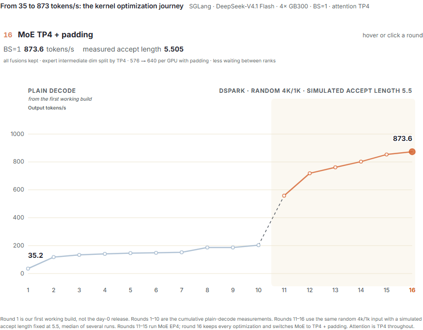
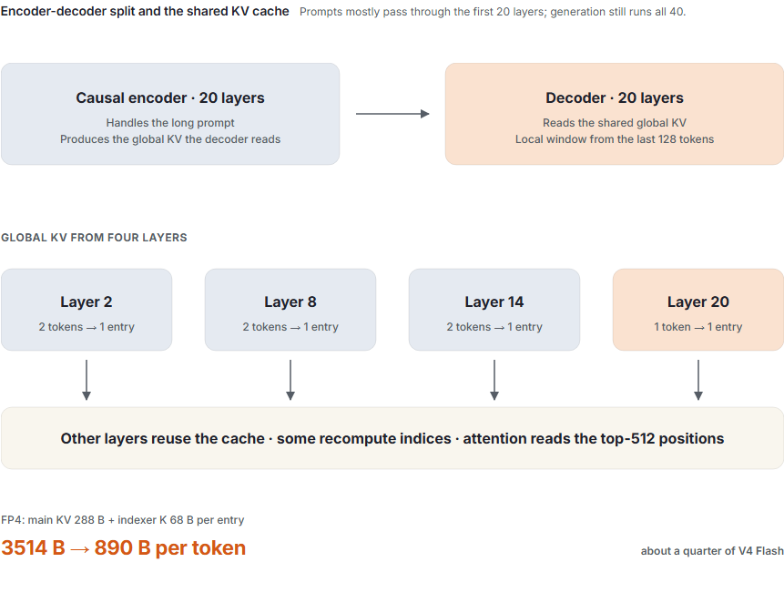
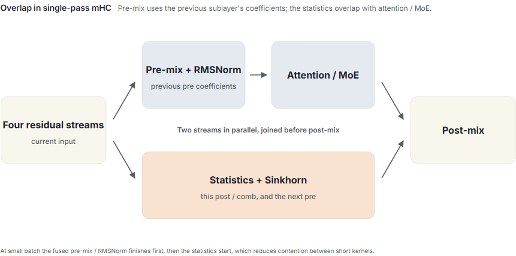
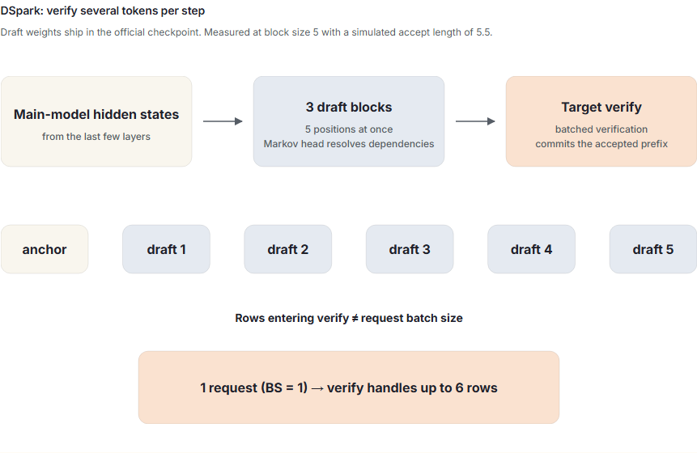
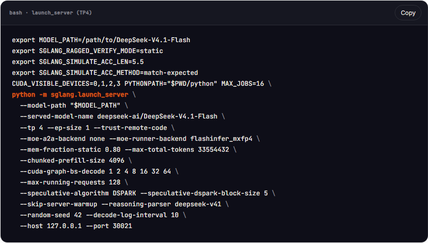
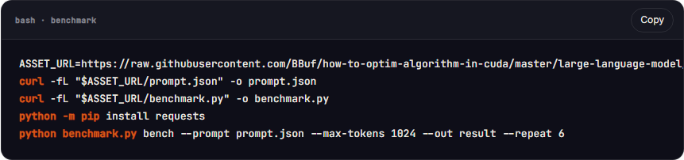

SGLang 团队同时完成了 DeepSeek-V4.1 Flash 的 Day-0 支持和内核优化。在 4×GB300 上、批大小（BS）为 1 时，纯解码速度从首个可运行版本的 35 token/s 提升到 203 token/s。启用 DSpark 后，团队继续优化验证阶段、MoE 和小批量投影，最后将 MoE 切换到带 padding 的 TP4。最终配置使用 Attention TP4、MoE TP4（EP1）、4,096 个随机输入 token、1,024 个输出 token，并将模拟接受长度固定为 5.5，在 BS=1 时达到 873.63 token/s。本文介绍模型架构发生的变化，以及这些内核优化是如何逐步实现的。
单独打开本地交互页面（可用“上一张 / 下一张”浏览全部本地静态备用图）
查看静态备用图
有关发布范围和运行配方，请参阅 Day-0 支持文章和 LMSYS 文章。
架构变更与 KV 缓存压缩
V4.1 Flash 的主干比 V4 Flash 更大，但处理每个输入 token 时激活的参数更少，KV 缓存也小得多。以下几项对推理服务最为关键：
| 项目 | V4 Flash | V4.1 Flash |
|---|---|---|
| 主干参数 | 284B | 552B，另含 196B Engram 记忆参数 |
| 每个 token 激活参数 | 约 13B | 输入约 8B，输出约 16B |
| 结构 | 43 个解码器层 | 20 个因果编码器层 + 20 个解码器层 |
| 全局注意力 | CSA / HCA | CSA2，KV 和索引跨层共享 |
| 每个 token 的全局 KV | 3,514 字节 | 890 字节 |
因果编码器—解码器结构减少了预填充计算。20 个解码器层从编码器的最终输出中取得全局 KV，因此长提示主要由前 20 层处理。解码器仍需要局部窗口，并通过重放最后 128 个 token 来重建它。这使主干中的预填充工作量大致减半。生成阶段则不同：每个新 token 仍会经过全部 40 层。

KV 缓存压缩来自跨层共享、池化和 FP4 存储。40 层中只有第 2、8、14 和 20 层这 4 层生成全局 KV，其余层读取这些缓存，少数层会重新计算自己的索引。前三组缓存把每两个 token 池化为一个条目，最后一组则为每个 token 保留一个条目。每个条目以 FP4 存储：主 KV 占 288 字节，索引器 K 占 68 字节。因此，每个原始 token 的逻辑存储量为：
$$ (288 + 68) \times \left(\frac{3}{2} + 1\right) = 890\ \text{字节}。 $$
这大约是 V4 Flash 的四分之一。由于局部窗口始终可以通过重放重建，需要持久保存的状态更少；DeepSeek 给出的 SSD 缓存需求约为此前的八分之一。需要注意的是，890 字节是逻辑大小。SGLang 的部分路径仍使用与 FlashMLA 兼容的缓存布局，因此实际分配的内存会有所不同。
内核优化还涉及另外两个架构组件。CSA2 使用分层候选过滤器缩小索引器的搜索范围，最终仅让排名前 512 的全局位置参与注意力计算。Engram 通过 n-gram 查找引入条件记忆。两者在模型中承担不同职责，也分别带来了新的索引、归一化和融合工作。
纯解码的内核优化
首先回顾纯解码如何从首个可运行版本的 35 token/s 提升到 203 token/s。本节使用最初的测量结果；DSpark 一节则切换到文末描述的随机 4k/1k 工作负载。
FP8 GEMM：35 → 118 token/s
FP8 中提供了一些密集权重，但它们的量化块和比例布局与后端的预期不符，因此这些 GEMM 采取了较慢的回退路径。现在，当加载权重时，我们重新排列缩放因子布局一次，它们会直接进入 Blackwell MXFP8 GEMM。
仅这一项就让 BS=1 的速度从 35.2 提升到 117.8 token/s。适配新模型时，先确认 GEMM 实际调度到了哪个内核，通常比一开始就调整 tile 更有价值。
小算子融合和 GEMV
逐 token 解码会执行一长串耗时很短的内核。RoPE、FP4 量化、压缩器池化、RMSNorm 和缓存写入前后直接相连，因此把相邻操作融合起来，每次都能省去一次内核启动和一次显存往返。
| 融合项 | 实现 | BS=1 速度（token/s） |
|---|---|---|
| RoPE + FP4 | 在一个内核中完成旋转、量化与反量化 | 117.8 → 133.5 |
| C2 压缩器 | 相邻 token 的归一化、池化与状态写入 | 148.4 → 152.1 |
| WO-A、归一化、Engram 门控 | 单行投影采用 GEMV；小型归一化和门控采用融合内核 | 186.6 → 203.3 |
我们还不再在每一层重建当前步的请求索引和暂存缓冲区，而是跨层共享它们，从而减少了大量重复转换和初始化，并将 BS=1 从 146.5 提升到 148.4 token/s。快速路径通过验证后被默认启用。
mHC：归约融合与重叠
mHC 保留四条残差流，而不是一条。每个注意力和 MoE 子层都要计算这些残差流的混合系数，并用 Sinkhorn 对系数进行归一化。单次计算并不昂贵，但每层的注意力和 MoE 都各执行一次，在小批量场景下累积开销不可忽视。根据输入行数选择 tile 大小，再把统计量归约与 Sinkhorn 融合后，BS=1 先从 133.5 提升到 141.1，随后达到 146.5 token/s。

更大的增益来自 V4.1 对单遍 mHC 的定义。预混合使用前一个子层生成的系数，因此当前的注意力或 MoE 可以与本子层的统计量计算并行执行。两部分运行在不同 CUDA stream 上，并在后混合阶段汇合。配合压缩器和索引器的融合与重叠，BS=1 从约 152 提升到 186 token/s。
DSpark 适配与优化
官方检查点自带 DSpark，其中包含三个轻量级草稿块。它们读取主模型最后几层的隐藏状态，一次为多个位置生成 logits，用 Markov head 处理草稿 token 之间的依赖关系，然后把整块候选交给目标模型进行批量验证。

我们将块大小固定为 5，并以目标接受长度 5.5 来模拟接受。计算锚点后，目标验证单个请求最多可处理 6 行。普通解码每个请求处理一行，因此必须针对这些小批量重新设计 M=1 快速路径。
第一组优化集中在验证和 MoE。我们把 mHC 重叠接入验证与草稿阶段，并让 WO-A 投影直接写入下一阶段所需的布局。候选掩码把有效长度检查与候选处理融合起来，减少了对大型缓冲区的扫描。MoE 方面，路由器直接输出专家所需的布局，输入量化与路由重叠执行；专家加权归约、共享专家相加和 all-reduce 合并成一步，从而减少中间结果回写。
接下来优化小批量投影和归一化。WO-A 使用 split-K，让更多线程块可以并行工作；mHC 则把四条残差流的混合与 RMSNorm 融合。草稿模型的多个 KV 投影也改为复用 MXFP8 权重和 scale，而不再使用旧的 FP8 路径。
随后进一步融合索引器后处理与投影。Top-K 之后的分数检查、无效位置过滤和 KV 页地址转换被合并为一步，选中的候选块会直接展开为 token mask。Q 的 RoPE 合并进注意力缓冲区写入；WO-A 的 split-K 归约则直接执行后续 MXFP8 量化，省去中间张量。
随后优化 L2、L8 和 L14（从 0 开始编号）中的验证阶段压缩。此前，这三层会依次运行多个小算子，用来查找前一个 token、处理 mask、执行池化并写入缓存。由于验证位置连续，同一请求内可以直接读取上一行，只有第一行需要访问环形缓冲区。我们把成对池化、RMSNorm、RoPE、量化和主 KV 写入融合进一个内核，并让索引器 K 复用这条融合写入路径。
最后，MoE 从 EP4 切换到带 padding 的 TP4。按 TP4 切分后，每张 GPU 上的专家中间维度为 576，并在加载权重时填充到 640 以适配内核。每张 GPU 计算同一批专家的不同切片，因此专家负载不均时，各 rank 之间的等待更少。在保留上述全部优化的同轮对比中，EP4 达到 854.64 token/s，TP4 达到 873.63 token/s，提升 2.22%；trace 中，各 rank 到达 finalize 的中位时间差从 11.14 µs 降至 3.40 µs。
| 配置 | BS=1 输出速度（token/s） | 实测接受长度 |
|---|---|---|
| DSpark，优化前 | 558.24 | 5.505 |
| + 验证 / MoE 融合与重叠 | 718.75 | 5.505 |
| + 小批量投影 / mHC 融合 | 761.71 | 5.505 |
| + 索引器后处理 / Q RoPE / WO-A 量化 | 802.38 | 5.505 |
| + C2 验证压缩融合 | 853.49 | 5.520 |
| 全部优化，MoE 改用 TP4 + padding | 873.63 | 5.505 |
在随机 4k/1k 工作负载上，将模拟接受长度目标设为 5.5 后，输出速度从 558.24 提升到 873.63 token/s，增幅约 56.5%。表中的 853.49 是 C2 验证压缩融合完成时的测量值；前文所述的 2.22% 则来自同一轮 EP4/TP4 对比。
这些结果均未使用 DeepSeek 随 V4.1 发布的新内核。
如何复现：随机 4k/1k，模拟接受长度固定为 5.5
本节重现了图中的 DSpark 点 11 到 16：4,096 个随机输入token、固定的 1,024 个输出token和目标为 5.5 的模拟接受长度。服务器配置控制接受长度，每个版本都使用相同的输入。
在 4×GB300 上，使用 BBuf/sglang@835c3909 的 SGLang 代码，以及 revision dba1be0a 的官方检查点。软件版本为 PyTorch 2.13.0+cu130、FlashInfer 0.6.18、Triton 3.7.1、sglang-kernel 0.4.6.post1、sgl-deep-gemm 0.1.7 和 CUTLASS DSL 4.6.2。
下面是达到 873.63 token/s 的 TP4 服务命令，请在该 SGLang checkout 的仓库根目录运行。--tp 4 --ep-size 1 表示 Attention 和 MoE 都使用 TP4；此版本会在加载权重时应用 padding。
export MODEL_PATH=/path/to/DeepSeek-V4.1-Flash
export SGLANG_RAGGED_VERIFY_MODE=static
export SGLANG_SIMULATE_ACC_LEN=5.5
export SGLANG_SIMULATE_ACC_METHOD=match-expected
CUDA_VISIBLE_DEVICES=0,1,2,3 PYTHONPATH="$PWD/python" MAX_JOBS=16 \
python -m sglang.launch_server \
--model-path "$MODEL_PATH" \
--served-model-name deepseek-ai/DeepSeek-V4.1-Flash \
--tp 4 --ep-size 1 --trust-remote-code \
--moe-a2a-backend none --moe-runner-backend flashinfer_mxfp4 \
--mem-fraction-static 0.80 --max-total-tokens 33554432 \
--chunked-prefill-size 4096 \
--cuda-graph-bs-decode 1 2 4 8 16 32 64 \
--max-running-requests 128 \
--speculative-algorithm DSPARK --speculative-dspark-block-size 5 \
--skip-server-warmup --reasoning-parser deepseek-v41 \
--random-seed 42 --decode-log-interval 10 \
--host 127.0.0.1 --port 30021

要重现 EP4 比较，请将 --ep-size 1 更改为 --ep-size 4 并保留其他所有内容。完整的 TP4 启动脚本可作为 launch-tp4.sh 获得。
输入使用固定随机种子 42 生成：先从模型词表中排除特殊 token，再均匀抽取 4,096 个 token ID。这些 ID 不经过聊天模板，直接作为输入，并被所有配置重复使用。
- 随机输入 (
prompt.json)。 - 输入构造、基准测试脚本和每次运行结果。
在第二个终端中运行：
ASSET_URL=https://raw.githubusercontent.com/BBuf/how-to-optim-algorithm-in-cuda/master/large-language-model/sglang/assets/deepseek-v41-kernel-journey/random-dspark
curl -fL "$ASSET_URL/prompt.json" -o prompt.json
curl -fL "$ASSET_URL/benchmark.py" -o benchmark.py
python -m pip install requests
python benchmark.py bench --prompt prompt.json --max-tokens 1024 --out result --repeat 6

脚本使用 temperature=0 和 ignore_eos=True，并在每次运行时检查输入是否为 4,096 个 token、输出是否为 1,024 个 token。请求通过 /generate 发出；服务器启动后，脚本会调用 /freeze_gc，每轮运行前清空缓存，并丢弃一次预热结果。每次服务器启动测量 6 轮。小批量投影、索引器后处理/投影融合、C2 验证和 TP4 配置都分别独立启动两次，并对 12 轮结果取中位数。本轮 EP4/TP4 对比按 TP、EP、TP、EP 的顺序交替启动，保留全部测量值；测量吞吐量时关闭 profiler。
match-expected 每轮接受 5 或 6 个 token，因此期望接受长度为 5.5。有限轮数以及最后一步的截断会让实测值略有偏移，表格中保留的是实际测量结果。这里的接受过程是模拟的，因此生成文本不用于判断答案质量；模拟模式也会禁用 CUDA Graph 内部的接受路径。
吞吐量的计算方法是：用第一个流式事件之后新增的 token 数，除以从第一个事件到最后一个事件的时间；完整预填充阶段不计入。接受长度会计入目标模型生成的那个 token，因此草稿块大小为 5 时，上限为 6。
下表并列比较关闭与启用 DSpark 的结果，以及 MoE TP4 + padding 配置。所有条目使用同一份代码、相同的随机输入、相同的输出长度和相同的计时方法；Attention 始终使用 TP4，表头中的 EP4/TP4 指 MoE 配置。
| 工作负载与指标 | DSpark 关闭 · EP4 | DSpark 开启 · EP4 | DSpark 开启 · TP4 + padding |
|---|---|---|---|
| BS=1 输出速度（token/s） | 223.50 | 853.49 | 873.63 |
| BS=1 实测接受长度（模拟目标 5.5） | — | 5.520 | 5.505 |
相关链接
- LMSYS 博客：SGLang 和 Miles 为 DeepSeek-V4.1 添加 Day-0 支持：团队完整的 day-0 文章，涵盖推理和 RL 训练。
- SGLang DeepSeek-V4.1部署指南：启动配置、硬件支持和调优说明。
- SGLang DeepSeek-V4.1 代码，dsv4.1 分支。
- Miles DeepSeek-V4.1 Flash 训练指南：训练环境、检查点准备和 RL 启动配置。
- Miles GitHub 仓库。
- DeepSeek-V4.1技术报告。
对于内核实现，请直接参见C2验证压缩、索引器后处理、Q RoPE / store和WO-A / MXFP8。
致谢
感谢 DeepSeek 团队开源 DeepSeek-V4.1，感谢 SGLang 和 Miles 团队以及社区中在模型支持、内核、测试和审查方面提供帮助的每个人。一些内核是使用 KDA 0.5 框架开发的，我们感谢 Humanize 和 Kernel Design Agents 提供的工具和工作流程。